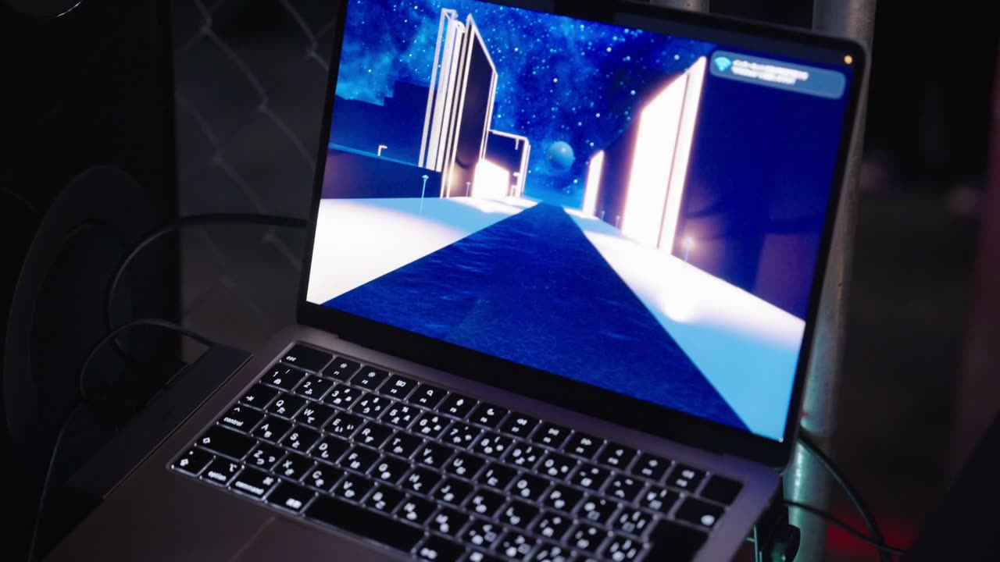
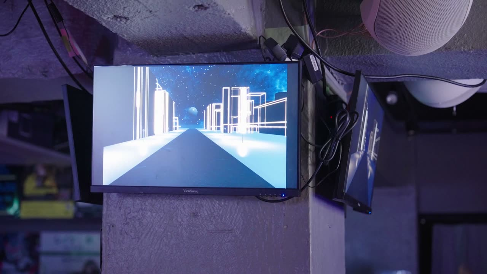
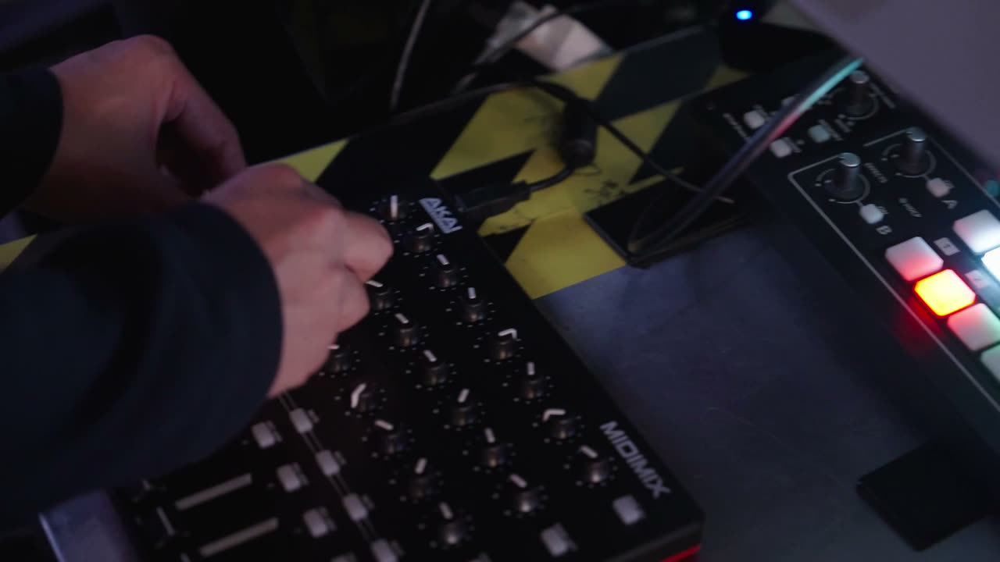

Generative VJ
- 年Year
- 2025
- かたちForm
- VJ（Unity HDRP、MIDI コントローラー）VJ (Unity HDRP, MIDI controller)
- 発表Shown at
- draw();「放課後ジェネラティ部 #4」（2025年11月27日）。Visual：Ariake 名義draw(); "Houkago Generative Club #4" (27 November 2025), as Ariake (visual)
draw(); - リンクLink
- YouTube（イベントのダイジェスト）
GitHub
BSP（空間の分割）で並べたビル群の、サイズと高さを演奏に合わせて動的に変える演出。A performance in which building clusters laid out by BSP (binary space partitioning) change their size and height dynamically with the music. (draft)